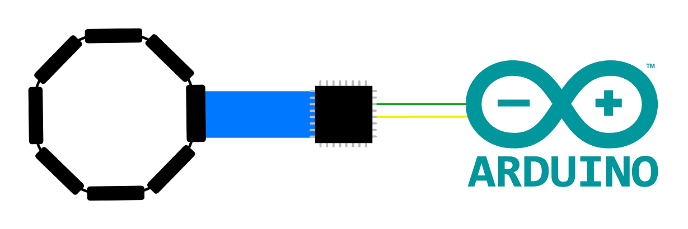
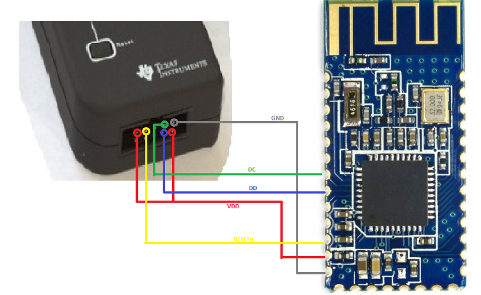
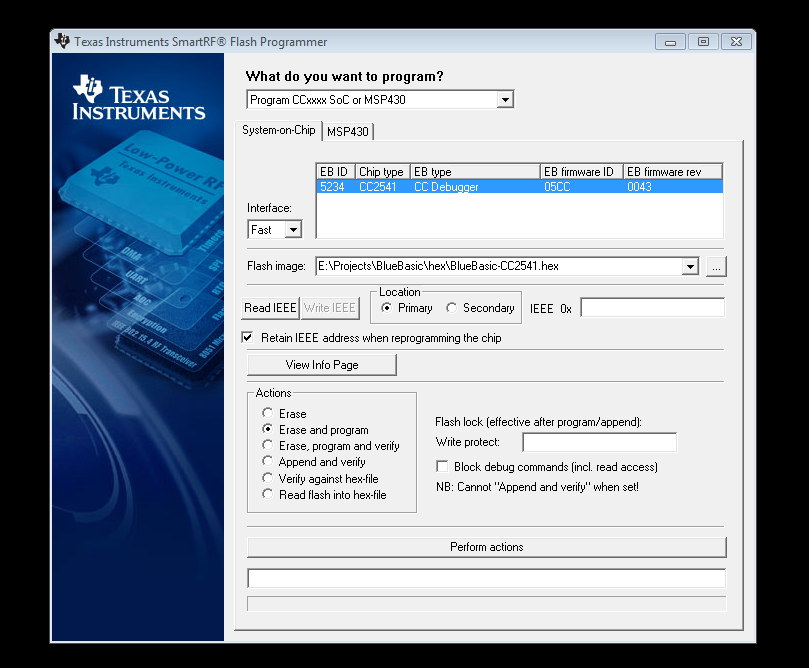
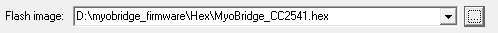
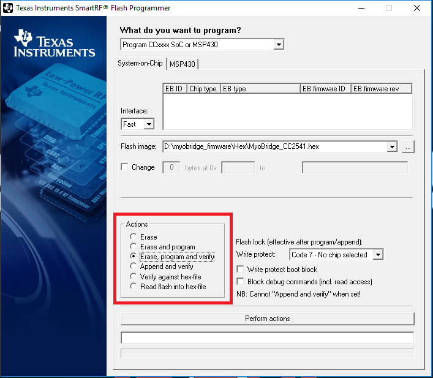
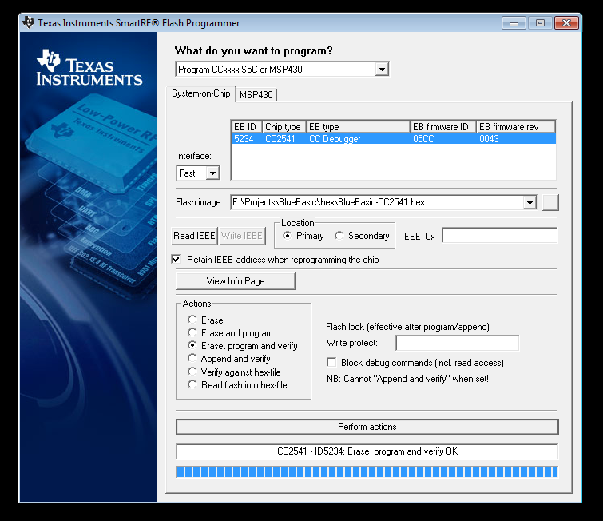
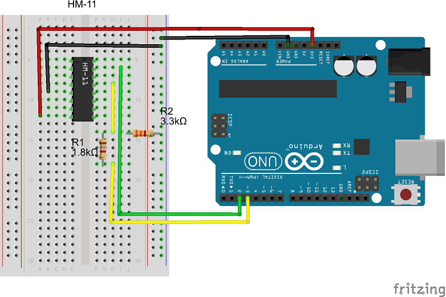
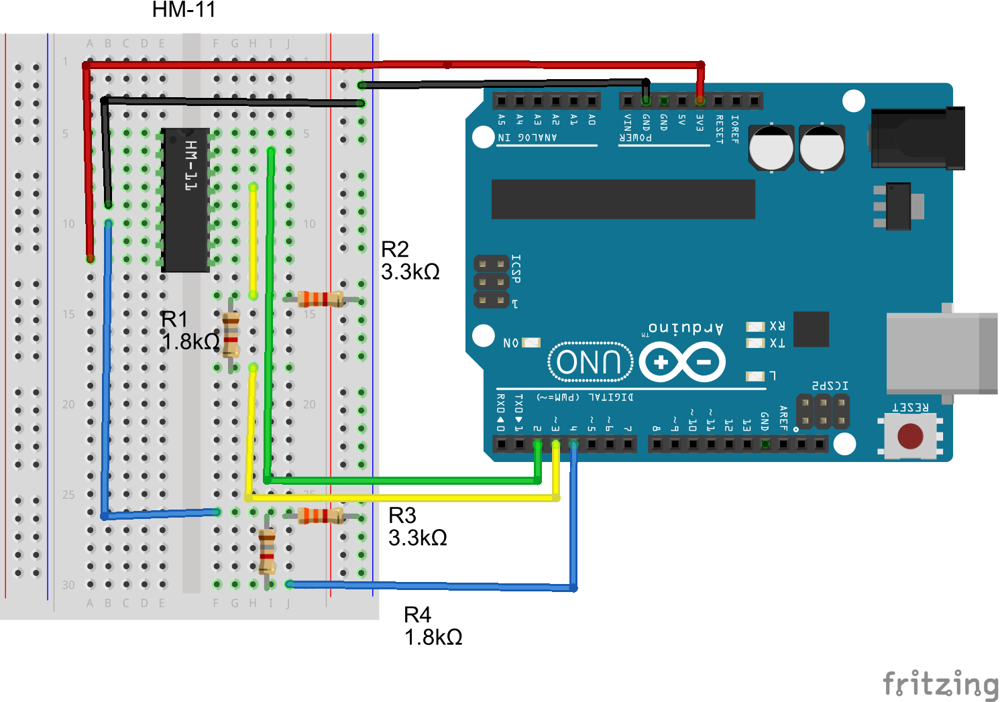

Setting up MyoBridge
As a developer, one of the largest issues was getting MyoBridge to work but also one of the most important aspects of MyoBionics is the MyoBridge. So we now have a whole page dedicated to this topic. But as a introduction, MyoBridge is a firmware and Arduino library file made by vroland that allows the Myo Armband to connect to an Arduino unit via a BLE Module. A full description can be found on the MyoBridge main website. As the Myo Armband does not connect to any BLE module fresh out of the box, some modification is required. This is done using the MyoBridge Firmware. However, even if it connects to a Bluetooth Module, the data cannot be automatically interpreted by an Arduino unit. This is solved by the MyoBridge Arduino library. So, in short, this guide is split into 2 sections:
Using the Myobridge Firmware
So the first step in using the MyoBridge Firmware is to get a HM-10/11.
Despite the guide itself, we recommend using a HM-10 module with the broken out pins for RX,TX,State,VCC and GND.
The next step is to solder the HM-10/11 in preperation to flash the firmware.
Soldering the Bluetooth Module
To do this, solder the HM-10/11 according to the images below.
To avoid breaking the pins on the HM-10/11, use multi-cored wires that can bend easily compared to single-core.


Once the HM-10/11 is soldered accordingly, the next step is to flash the MyoBridge Firmware to the Bluetooth Module
Flashing the Firmware
To flash the firmware onto the HM-10/11 chip, you will need to use a CC-Debugger. Alternatively, you can use an Arduino unit to flash the firmware that requires an Arduino unit. However, the procedure is similar but has some minor differences.
Using a CC-Debugger
This guide follows a CC-Debugger by Texas Instruments and may vary depending on what you use.
It is recommended to connect all the soldered wires from the HM-10/11 onto a breadboard and use single-core wires to connect it to the CC-Debugger.
This makes the process easier and more manageable.
You can also use this
guide
if you are unsure on connecting the CC-Debugger.
The connection is as shown in the image below.
The image shows connection of HM-10 to CC-Debugger. It is slightly different for the HM-10.

This connection by itself should turn the LED on the Debugger green (provided it is connected to PC). If it doesn't please check all connections.
Next, you will need to download this software:
SmartRF Programmer and ensure to use Version1!!!
Instruction on using the SmartRF Flash Programmer can be found
here.
However, if you'd rather stay on this page, the instructions are as follows:
Once the SmartRF Flash Programmer is installed, you should see a screen something like this:

The image above also shows when the CC-Debugger and device are plugged in.
If the LED on the CC-Debugger is RED when the HM-10/11 is connected, try pressing the 'Reset' button.
Once the device is detected, select the file to flash which is the "MyoBridge_.hex" file in the MyoBridge-master folder.
It should look like this:

Once the hex file is selected, on the lower left screen in the "Actions" box, select the option "Erase, program and verify".
It looks like this:

Then click the "Perform actions" button and the process should begin.
The process itself may take a few minutes but once it is completed, it will look something like this:

Once the firmware is flashed, you may skip the next section and move straight to
Using the MyoBridge Arduino Library.
Using the Arduino CC-Loader
This section follows a Arduino Uno unit and may vary slightly for other models.
- Firstly, download the required folder to use the CC-Loader here.
-
Then connect your Arduino to the HM-10/11 according to the image shown below (similar to the image from the link above)
IMPORTANT: To prevent damage to the HM-10/11 unit, ensure you use an Arduino that operates on 3.3V or use voltage dividers. Also, ensure that the D4, D5 and D6 are connected to the Reset, DC and DD respectively - Next, connect your Arduino to your PC and check which port it is connected to. This can be checked by opening the Arduino IDE program and under the Tools > Port tab when the Arduino is connected.
- Then, upload the "CCLoader.ino" sketch (located in CCLoader-master\Arduino\CCLoader) onto the Arduino.
- For the next step, download the appropriate BIN files according to your chip. Ensure that the BIN file and "CCLoader.exe" are in the same folder on your PC. Usually in the folder CCLoader-master\Windows
-
Open command prompt on your PC (Windows Key + R -> cmd) and navigate to the directory where CCLoader.exe is located.
For example:
cd C:\User\Desktop\CCLoader-master\Windows -
Run CCLoader by typing in command prompt:
ccloader < port number > < bin file > < device type >
Fill in the correct parameters accordingly:- < port number > is the port that your Arduino is connected to (Step 3)
- < bin file > is the name of the bin file (i.e "CC2540.bin")
- < device type > is type of Arduino that you're using (0 for Uno/most type, 1 for Leonardo)
ccloader 4 CC2540.bin 0
Guide adapted from wxirxn's post.
Using the MyoBridge Arduino Library
IMPORTANT: This section assumes you have an Arduino unit to test the connection of the Bluetooth Module with the Myo Armband.
For clarity, this part of the guide resembles closely the original
guide.
However, just for simplicity and clarity, this section will try and simplify the process.
Connect the HM-10/11 Module to your Arduino in the following way:
| HM-10 Pin | Arduino Pin |
| VCC | 3.3V |
| GND | Ground(GND) |
| TX | RX(D0) / D2 |
| RX (+Voltage divider) | TX(D1) / D3 |
The hardware setup suitable for the example codes should look like this (The HM-11 IC is pinwise equivalent to the back side of the real module, with the antenna facing upwards)

NOTE: If you are planning to use the RX/TX connection on the Arduino, modify the code such that:
- Ensure that the line SoftwareSerial bridgeSerial(2,3) is removed
- All brideSerial is replaced with the respective "Serial"

And following the same setup, you utilize the Reset pin by the following line of code:
MyoBridge bridge(bridgeSerial, RESET_PIN)
Where RESET_PIN = 4 in the above example.
Finally, you can use any of the example codes attached in the MyoBridge folder to test the connection.
PS: It is worth noting that this process is similar when trying to use in junction with Almond PCB